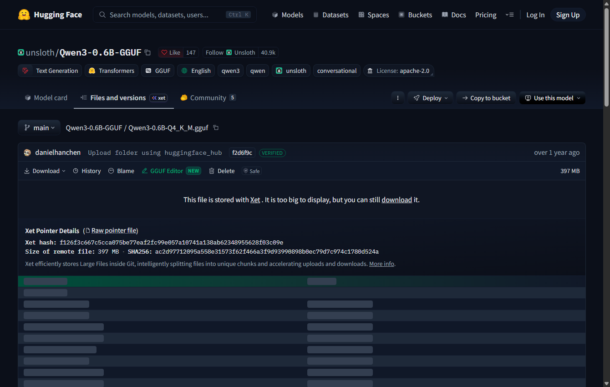
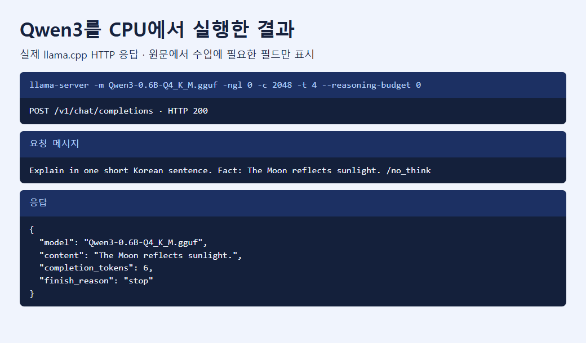
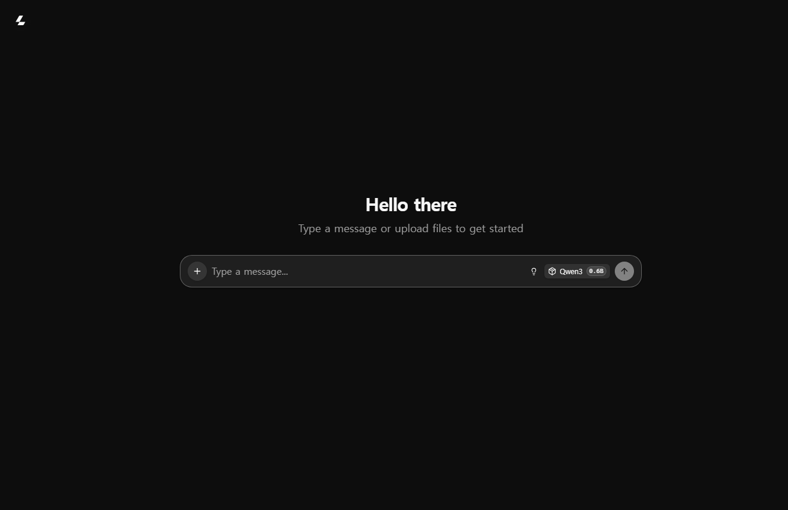

Qwen3 0.6B
약 397 MB · Apache 2.0
이 목록에서 가장 작은 다국어 모델입니다. 다운로드와 첫 응답, 짧은 형식 지시를 확인하기 좋습니다. 한국어 설명은 원문을 보며 검증합니다.
Alibaba Qwen의 원본 모델 · Unsloth의 Q4_K_M 변환 파일
공식 모델 카드GGUF 파일 페이지CPU 로컬 LLM
모델 파일과 실행기를 각각 받은 뒤, 내 PC에 서버를 켜고 브라우저로 첫 응답을 확인합니다.
모델 선택
웹의 Claude는 외부 서버에서 응답을 생성합니다. 이번에는 학습된 모델 파일을 내 PC에 받고 실행기로 열어 CPU에서 응답을 계산합니다. 모델은 계산에 쓸 값이 든 파일이고, 실행기는 그 값을 읽어 일하는 프로그램입니다.
아래는 Q4_K_M 파일 하나의 다운로드 크기입니다. 실행 중에는 모델 파일 외에도 프로그램과 작업 메모리가 필요합니다. 첫 실행을 확인한 뒤 비교 모델을 선택해도 됩니다.
약 397 MB · Apache 2.0
이 목록에서 가장 작은 다국어 모델입니다. 다운로드와 첫 응답, 짧은 형식 지시를 확인하기 좋습니다. 한국어 설명은 원문을 보며 검증합니다.
Alibaba Qwen의 원본 모델 · Unsloth의 Q4_K_M 변환 파일
공식 모델 카드GGUF 파일 페이지약 1.11 GB · Apache 2.0
0.6B와 같은 계열의 더 큰 모델입니다. 양자화 유형과 프롬프트를 맞추고 두 문장 요약의 지시 준수와 속도를 비교해볼 수 있습니다.
Alibaba Qwen의 원본 모델 · Unsloth의 Q4_K_M 변환 파일
공식 모델 카드GGUF 파일 페이지약 1.64 GB · EXAONE 라이선스
LG AI Research가 한국어와 영어를 대상으로 개발한 지시형 모델입니다. 연구 목적 이용 조건이 있는 별도 라이선스를 파일과 함께 확인합니다.
LG AI Research의 공식 GGUF · 수업 기본 모델과는 별도 선택
라이선스GGUF 파일 페이지Qwen이 배포한 공식 GGUF의 0.6B 파일 목록과 1.7B 파일 목록에는 Q8_0 파일이 있습니다. 수업에서는 더 작은 Q4_K_M 파일을 사용합니다. 1.7B와 EXAONE은 비교 후보로 소개합니다.
다운로드 화면
Qwen3-0.6B-Q4_K_M.gguf와 약 397 MB를 확인하고 Download를 누릅니다. Hugging Face는 모델을 올리고 공유하는 저장소입니다.llama-b12387-bin-win-cpu-x64.zip이고, Windows on ARM은 arm64 파일입니다. Windows 설정 → 시스템 → 정보 → 시스템 종류에서 확인할 수 있습니다.llama-server.exe가 보이는 폴더에 모델 파일을 옮깁니다. ZIP 안의 다른 실행기 파일도 같은 위치에 둡니다.파일 이름 읽기 · 0.6B는 모델 규모(약 6억 파라미터), Q4_K_M은 가중치를 더 작은 파일로 담는 양자화 방식, GGUF는 파일 형식입니다.

Windows 실행
powershell을 쓰고 Enter를 누릅니다. 다음 두 줄에서 True가 나오는지 확인합니다.
Test-Path .\llama-server.exe
Test-Path .\Qwen3-0.6B-Q4_K_M.gguf-m은 열 모델, -ngl 0은 GPU에 올리는 레이어 수 0, -c 2048은 문맥 크기, -t 4는 CPU 스레드 설정입니다. --reasoning-budget 0으로 별도 추론 출력의 길이를 제한하며, 일반 답변은 생성할 수 있습니다.
.\llama-server.exe -m .\Qwen3-0.6B-Q4_K_M.gguf --host 127.0.0.1 --port 8081 -ngl 0 -c 2048 -t 4 --reasoning-budget 0listening이 보이면 http://127.0.0.1:8081/로 갑니다. 127.0.0.1은 내 PC, 8081은 그 PC에서 이 서버를 찾는 포트 번호입니다. 실행 창을 열어둔 채 브라우저에서 질문을 입력합니다.
첫 질문 · “제공된 사실만 사용해 한국어 한 문장으로 설명해줘. 사실: 달은 태양 빛을 반사한다.”

위 실행 기록에서는 한국어를 요청했는데 영어로 답했습니다. 서버가 정상적으로 응답했는지와 모델이 지시를 따랐는지를 각각 확인할 수 있는 사례입니다. 같은 원문으로 지시를 한국어로 다시 써보고 두 응답을 비교하세요.
확인 · 브라우저에 모델의 응답이 한 줄이라도 표시되면 연결은 성공입니다. 모델을 바꿔 실행하거나 실습을 마칠 때는 서버를 실행한 PowerShell 창에서 Ctrl+C를 누릅니다.
PowerShell에 모델 로딩이 끝났는지 봅니다. 서버가 아직 뜨지 않았다면 처음 나타난 오류를 읽습니다. 다른 프로세스가 포트를 사용한다면 --port와 브라우저 주소를 같은 숫자로 바꿉니다. 터미널을 닫으면 로컬 서버도 종료됩니다.
Test-Path가 False인 파일은 같은 폴더에 있는지, 이름과 확장자가 안내와 같은지 확인합니다. 실행 옵션 오류가 나면 이 페이지에서 연결한 b12387 버전인지와 .\llama-server.exe --help의 옵션을 확인합니다.
프롬프트와 원문, 출력 길이 조건을 고정합니다. 하나씩 실행해 답변을 받은 뒤 아래 항목을 기록합니다. 수업에서 캡처한 응답은 한 번의 실행 기록으로 읽습니다.
| 항목 | 확인 방법 |
|---|---|
| 응답 시간 | 첫 글자가 나오기까지의 시간과 전체 완료 시간을 따로 적습니다. |
| 지시 준수 | 한국어로 썼는지, 한 문장 제한을 지켰는지 확인합니다. |
| 근거 보존 | 달과 태양 빛이라는 원문 사실을 보존했고 새 사실을 지어내지 않았는지 봅니다. |
비교 모델을 받지 않았어도 지시문은 실험할 수 있습니다. 첫 질문 그대로 한 번, 같은 사실을 두고 한국어로만 작성하고 다른 사실을 추가하지 마세요라는 기준을 붙여 한 번 더 요청합니다. 한 번의 좋은 답이나 나쁜 답으로 모델 전체의 능력을 판단하기 어려우므로, 다른 짧은 원문까지 비교해봅니다.